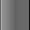

R.O.B. wrote:
I've always been a fan of the taskbar from Windows Vista's Aero theme (truthfully, it was one of the first things that came to my mind when I found out about Classic Shell adding taskbar skinning). So I decided to rip and share it with everyone.
Windows Vista Basic (Horizontal)
Windows Vista Basic (Vertical)
Windows Vista Aero (Horizontal)
Windows Vista Aero (Vertical)

I did resize them to make them easier to see and to right-click on. Also, if you use large taskbar icons, these images actually resize pretty well with the taskbar.
Funnily enough, I actually kind of like the Basic ones better after looking at them all side by side. I think the darker colors look quite nice.
Anyhow, I hope you all enjoy!
SketchAnimations2 I'll just put the Blue XP pngs for others in a zip.
I put in no border line transition between taskbar and tray image.
That way, you can use Gaurav's method, by reducing the right horizontal border 170 pixels and lower.
With each lower number, the tray transition will move to the left.
download/file.php?id=3516 I've just created (may not be the best,) Windows 95/Classic Theme!


JoshuaL2 wrote:
Wkay wrote:
First person to give me a Windows 7 default background taskbar skin for my 1600 x 900 monitor wins a free chocolate chip cookie.
screw the taskbar skin, im takin' that cookie *steals cookie*
screw the cookie, im providin' those taskbar images *embeds taskbar images*
BUILD 7601 SP1:


 BUILD 6801 M3:
BUILD 6801 M3:


{kind=link}
{kind=link}
{kind=link}